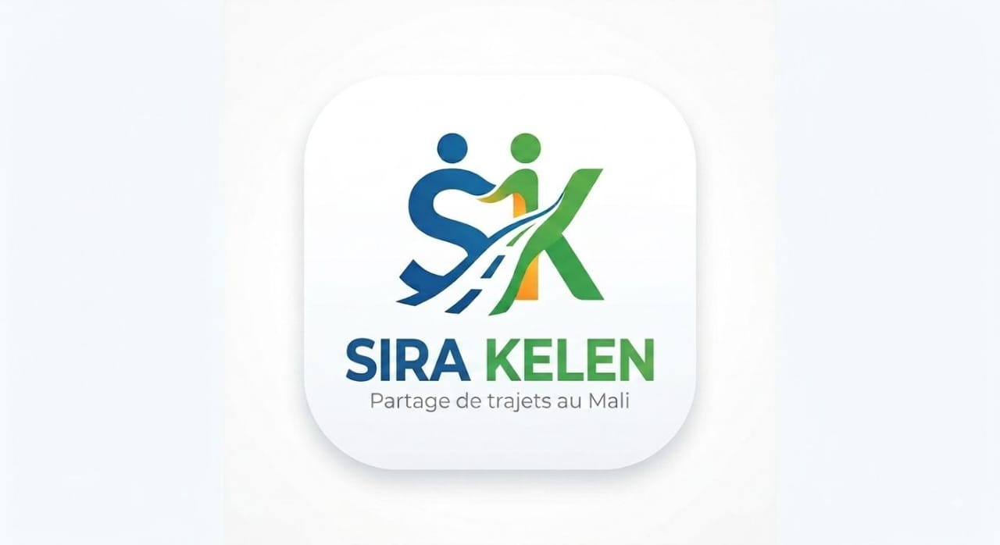

Version principale

Sur fond clairLogo officiel validé par le groupe (dessin original). Fichiers sources : logo-officiel.svg (vectoriel), logo-officiel.png et app-icon-512.png (icône d'application).
Règles d'utilisation
✓ Toujours sur fond blanc, crème ou foncé.
✓ Laisser un espace de sécurité autour (au moins la hauteur du « S »).
✓ Icone d'application : version complète sur badge orange.
✗ Ne jamais déformer, recolorer ou ajouter des effets (ombre, dégradé).